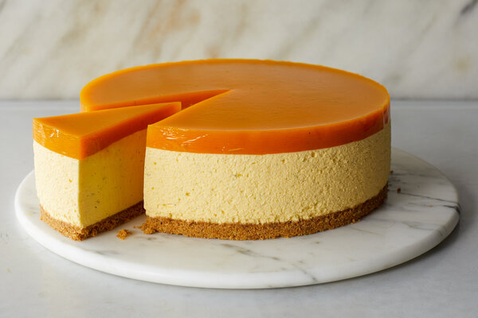

No Bake Mango Cheesecake

This No Bake Mango Cheesecake is a complete and utter celebration of summer! A creamy mousse-like cheesecake loaded with 3 BIG mangoes and is surprisingly straightforward to make with your food processor.
Overview of the recipe
- Serving size: 12
- Prep time: 30 mins
Ingredients
BASE:
- 150 g / 5 oz Arnott's Marie Biscuits (17 crackers), or digestives, Graham Crackers or other plain sweet biscuit
- 100 g / 3.5 oz unsalted butter , melted
- 2 tbsp white sugar
MANGO:
- 700 g / 1.4 lb mango flesh (2 large mangoes)
FILLING:
- 4 1/2 tsp gelatin powder
- 1/2 cup / 125 ml cold tap water
- 500 g / 1 lb Philadelphia cream cheese, softened (2 blocks)
- 2/3 cup / 150g caster sugar (superfine white sugar)
- 300 ml / 10 oz whipping cream*
MANGO JELLY:
- 3/4 tsp gelatin powder
- 1/4 cup / 65 ml cold tap water
- 1 tbsp lemon juice
TOPPINGS (OPTIONAL):
- 300 ml / 10 oz whipping cream*
- 1 tbsp white sugar
- 1 tsp vanilla extract
- 1 large mango, cut into cubes
- 2 passionfruit
Directions
CAKE PAN:
- Use a 22 cm / 9" springform pan (or similar size). Turn the base UPSIDE DOWN (for ease of removal later).
- Place a square sheet of baking paper on the base, then secure in springform pan (see video) with excess paper hanging out sides.
- Grease sides with butter and line with paper.
BISCUITE BASE:
- Blitz crackers into fine crumbs in a food processor.
- Add butter and sugar, blitz until combined. Pour into prepared cake pan. Press down firmly - base only, not sides.
FILLING:
- Put water in a heatproof bowl. Sprinkle gelatin over surface (don't dump in centre). Stir to partly dissolve. Set aside 5 minutes - it turns gelatinous.
- Microwave 15 seconds on high x 2, stirring in between. Stir until dissolved (few tiny specks ok). Cool 5 minutes.
- Place mango in food processor. Blitz until smooth.
- Measure out 3/4 cup and reserve for mango jelly, set aside.
- Add cream cheese, cream, sugar and gelatine mixture into food processor (2.5L/2.5qt/10 cup+ capacity - Note 3). Blitz for 30 seconds or so until smooth.
- Pour into cake pan. Refrigerate 3+ hours until top is set.
MANGO JELLY:
- Pour water into bowl, sprinkle over gelatin. Leave 5+ min. Microwave on high 2 x 10 sec, stir well until granules dissolved. Set aside 5 minutes to cool.
- Place reserved mango puree (from step 4 under Filling) and lemon in a bowl. Pour over gelatin and whisk well.
- Pour over cheesecake filling. Tilt cake around to spread.
- Refrigerate 12 hours+.
- Release pan sides, then use overhang paper to slide cheesecake onto serving plate. Then slide the paper out from under the cheesecake.
DECORATIONS:
- Place cream, vanilla and sugar in a bowl. Whip until the cream is softy whipped.
- Piled over the centre of the cheesecake.
- Top with more chopped mango and passionfruit pulp. Serve and relish in praises!
Back